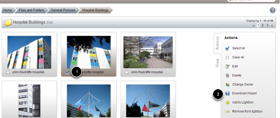
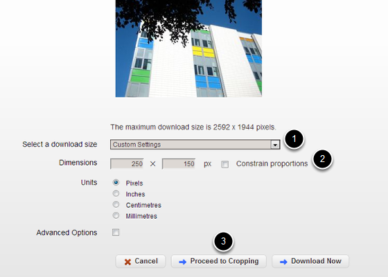
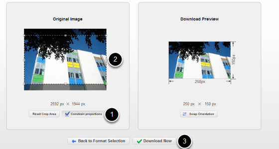
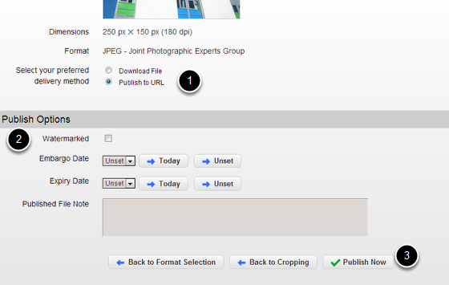
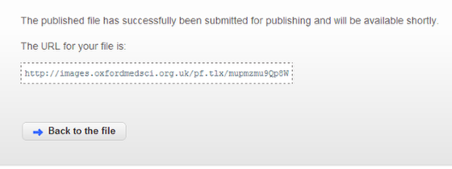
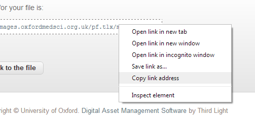

Crop and Publish an Image from the Image Management System as a URL
You can create a web address for any image uploaded to the Image Management System.
Select image

- Select the image you would like to publish.
- Click on the Download Wizard link on the right hand side of the page.
Crop image

If you wish to crop your image before publishing it:
1. Select Custom Setting from the drop down list.
2. Untick the Constrain proportions box and enter the required size of your image in the Dimensions boxes.
3. Click on Proceed to Cropping.

- Tick the Constrain proportions box.
- Move the crop box to highlight the area of the image you would like to keep.
- Click on the Download Now button.
Publish image to URL

- Make sure the Publish to URL option is selected.
- You can watermark your image and set publication dates.
- Click on the Publish Now button.
Image web address

You will be taken to a page giving you a link / the web address for the image.
Click on the link to take you to the image or to copy the address right click on the link and select Copy link address:
